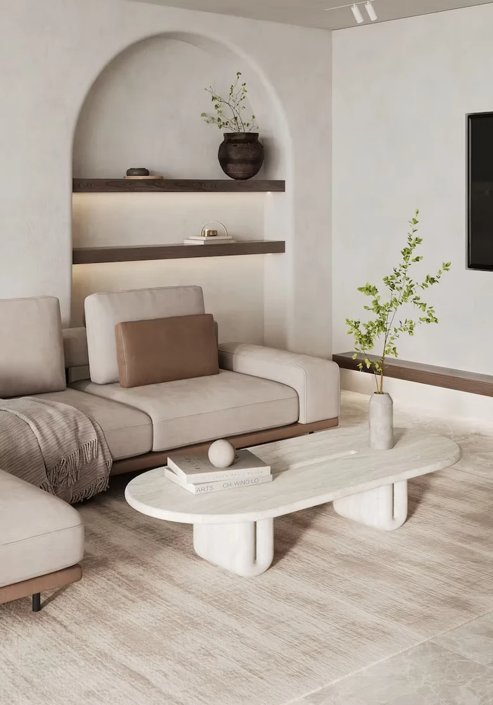

上海天台西餐吧，今日正式营业啦，欢迎品尝点点小红书的 AI 助手
思考完成，参考小红书与全网内容
6个人暑假去新疆玩10天，推荐走伊犁环线，以乌鲁木齐为起点和终点，包7座车或自驾最方便。路线可以安排为：乌鲁木齐→赛里木湖→伊宁→喀拉峻草原→琼库什台→夏塔→昭苏→那拉提草原→独库公路→乌鲁木齐。
🚗 行程安排
整体路线建议安排为：乌鲁木齐→赛里木湖→伊宁→喀拉峻草原→琼库什台→夏塔→昭苏→那拉提草原→独库公路→乌鲁木齐。第一天抵达乌鲁木齐后，可以逛国际大巴扎，品尝新疆特色美食；第二天前往赛里木湖，欣赏新疆最经典的湖泊、雪山和草原风光，晚上建议住湖边附近，方便拍摄日出和晨雾。
之后前往伊宁市，途中可以打卡果子沟大桥，晚上逛六星街，体验当地民族风情。接下来几天重点游玩伊犁草原区域，喀拉峻草原以辽阔的草原和雪山背景闻名，适合拍照；琼库什台则保留了原始牧村风貌，可以体验木屋、草原、森林和星空，是行程中非常值得停留的一站。
随后前往夏塔景区，近距离欣赏天山雪山和冰川景观，可以安排轻徒步，感受草原、森林和雪山结合的独特风景。之后前往那拉提草原，重点游览空中草原，体验骑马、牧场风光和哈萨克族文化。最后一天安排独库公路返程，这是整条路线的高潮，可以看到雪山、峡谷、森林和草原等多种地貌，一路拍照非常出片。
📷 沿途景点
这趟行程的核心打卡点包括：赛里木湖的蓝色湖面、果子沟大桥的公路大片、琼库什台的原始村落、夏塔的雪山冰川、那拉提的空中草原以及独库公路的壮丽景色。暑假7—8月属于新疆旅游旺季，建议提前预订车辆和住宿，同时准备防晒用品、墨镜、防风外套和舒适运动鞋。
✨ 实用提醒
费用方面，6个人包车10天，交通费用大约1万—1.5万元，人均约1700—2500元；住宿、餐饮和门票加起来，整体比较舒适的预算大约人均5000—8000元左右。这条线路节奏适中，不会太赶，既能看到新疆最经典的自然风光，也能体验当地民族文化，非常适合作为朋友暑假旅行目的地。
新疆旅游攻略
和朋友的暑假伊犁环线计划，点点帮我们整理好了，直接在上面的卡片里上下滑动看完整攻略。
共 2 条评论
可以在图里面往下滑诶！
今天 · 上海想看看沿途的草原和雪山
今天 · 北京— 到底了 —